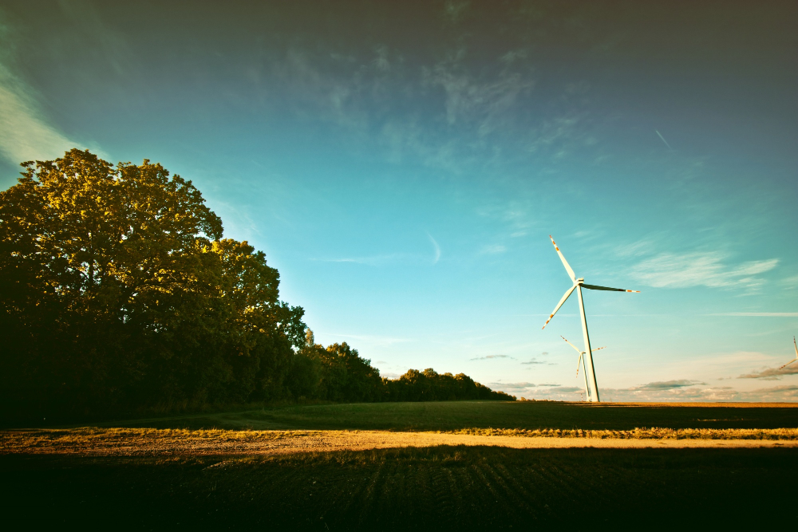

Un informe reciente señala que las plantas solares fotovoltaicas pueden aportar beneficios ambientales más allá de producir energía limpia. Cuando se planifican adecuadamente, pueden combinarse con agricultura, restauración del suelo y protección de la biodiversidad, generando impactos positivos en el entorno local.
Leer noticia completaLa feria internacional de turismo FITUR 2026, celebrada en Madrid, reunió a gobiernos, empresas y expertos para debatir el futuro del turismo. Uno de los temas principales fue impulsar un modelo turístico más sostenible. Durante el evento se propusieron medidas como reducir el impacto ambiental del transporte, promover alojamientos ecológicos y evitar la masificación de destinos turísticos. La feria contó con más de 255.000 visitantes y generó un impacto económico de unos 505 millones de euros, lo que demuestra su importancia para el sector turístico internacional.
Leer noticia completaVarios países europeos están promoviendo políticas para hacer el turismo más sostenible. Estas medidas incluyen fomentar el uso del tren o transporte público en lugar de vuelos cortos, apoyar hoteles con certificaciones ecológicas y proteger los ecosistemas en los destinos turísticos. Además, la Unión Europea está preparando una nueva estrategia de turismo sostenible que busca equilibrar el crecimiento económico del turismo con la protección del medio ambiente y las comunidades locales.
Leer noticia completa
La expansión rápida de las energías renovables también está generando controversias. En España, una investigación judicial analiza posibles irregularidades en la autorización de un megaparque solar en Cáceres, vinculado a proyectos de la empresa Iberdrola.
Leer noticia completa